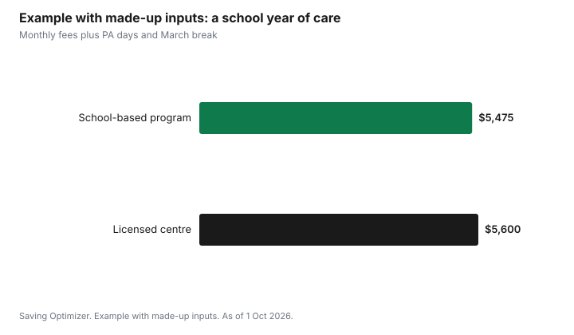

Kids · Canada
Before- and After-School Care in Canada: Options, Costs and Claiming Them
Before- and after-school care in Canada usually means one of three things: a program run at or with your child's school, a licensed child care centre or home that covers the school day's edges, or a sitter or nanny. Costs and help depend on your province. Ontario requires school boards to offer programs for junior kindergarten to grade 6 where there is enough demand. B.C. reduces school-age fees at participating centres. Alberta leaves out-of-school care outside its flat fee but offers a subsidy below $90,000. In every province, what you pay can count toward the federal child care expense deduction.
Key takeaways
- Ontario school boards must ensure before- and after-school programs for JK to grade 6 where there is sufficient demand and the program is viable.
- B.C.'s fee reduction is $320 a month for kindergarten and $115 for grade 1 to age 12 in group care. The Affordable Child Care Benefit has a $210 maximum for care surrounding a school day.
- Alberta: out-of-school care is not in affordability funding. Families under $90,000 with children in full-time kindergarten to grade 6 can apply for the Child Care Subsidy.
- The child care expense deduction covers before- and after-school care: up to $8,000 per child under 7 and $5,000 for ages 7 to 16.
- Example with made-up inputs: a $500 monthly program for ten months is $5,000 before any deduction.
Your three options
| Option | What it is | Questions to ask |
|---|---|---|
| School-based program | Run by the board or a provider on school grounds | Waitlist, PA days, holiday weeks, late pickup fee |
| Licensed centre or home | Child care that walks or buses children to and from school | Transport, licence, provincial fee reduction or subsidy |
| Sitter or nanny | An individual you hire | Employer duties, receipts with SIN, backup care |
Ask each option what happens on professional activity days, winter break and March break, because those days are often extra or not covered. A program that is cheaper per month can cost more over a year once those days are added.
Ontario: boards must offer programs where demand exists
Ontario's policy for school boards says boards must ensure before- and after-school programs are available for students in junior kindergarten to grade 6 at elementary schools where there is sufficient demand and the program is viable. Boards can run the program themselves or work with an eligible third-party provider. Ask your school which applies, and get on the list early.
For children under 6 in licensed care, Ontario's fee cap applies where the provider is enrolled in the Canada-wide system. The Ontario child care fees guide explains the $22 cap and the age rules.
B.C. and Alberta
In B.C., participating licensed centres apply the Child Care Fee Reduction Initiative automatically: up to $320 a month for kindergarten and $115 for grade 1 to age 12 in group care. Families with income generally up to $111,000 can apply for the Affordable Child Care Benefit, which has a maximum of $210 a month for licensed care surrounding a school day. The B.C. guide has the details.
In Alberta, out-of-school care fees vary by provider and are not part of affordability funding. Families earning under $90,000 with children in full-time kindergarten to grade 6 at a licensed program can apply for the Child Care Subsidy, with maximums of $644 for kindergarten and $366 for grades 1 to 6 at the lowest income band. The Alberta guide has the table. Other provinces: check your provincial child care ministry.
Claiming it on your taxes
Before- and after-school care is a child care expense if it lets a parent work, study or run a business. The deduction is up to $8,000 per child under 7, $5,000 for ages 7 to 16, and $11,000 for a child eligible for the disability tax credit, generally claimed by the lower-income spouse on Form T778. Keep receipts; an individual caregiver's receipt must show their SIN. The T778 guide walks through it.
Example with made-up inputs: a school year of care
These numbers are an example with made-up inputs, not program fees. A school-based program costs $500 a month for ten months: $5,000. Five PA days at $45 add $225, and a March break camp adds $250. The school year totals $5,475. A licensed centre at $560 a month that includes PA days and March break would total $5,600 for ten months.
| Option | Monthly x 10 | PA days | March break | Total |
|---|---|---|---|---|
| School-based program | $5,000 | $225 | $250 | $5,475 |
| Licensed centre, all-inclusive | $5,600 | Included | Included | $5,600 |

Sources
- Ontario, Before and after school programs, kindergarten to grade 6: policies and guidelines for school boards, as of 1 Oct 2026. Duty where sufficient demand and viability; board-run or third-party.
- Government of B.C., Child Care Fee Reduction Initiative and Affordable Child Care Benefit rates, as of 1 Oct 2026. $320 kindergarten, $115 grade 1 to age 12; $210 care surrounding a school day.
- Alberta.ca, Childcare fees and Child Care Subsidy Program, as of 1 Oct 2026. Out-of-school care outside affordability funding; subsidy under $90,000; $644 and $366 maximums.
- Income Tax Act, section 63, and CRA line 21400. Deduction limits; SIN on individual receipts.
- Every fee and total in the example table and chart is an example with made-up inputs.
Frequently asked questions
Do Ontario schools have to offer before- and after-school care?
Ontario's policy says boards must ensure programs for junior kindergarten to grade 6 at elementary schools where there is sufficient demand and the program is viable. Boards can run them or use an eligible third-party provider.
Can I claim before- and after-school care on my taxes?
Yes, if it lets a parent work, study or run a business. The child care expense deduction allows up to $8,000 per child under 7 and $5,000 for ages 7 to 16, generally claimed by the lower-income spouse on Form T778.
Is after-school care included in Alberta's $15-a-day fee?
No. Alberta says out-of-school care is not eligible for affordability funding. Families under $90,000 with children in full-time kindergarten to grade 6 at a licensed program can apply for the Child Care Subsidy.
Does B.C. reduce before- and after-school care fees?
At participating licensed centres, the fee reduction is up to $320 a month for kindergarten and $115 for grade 1 to age 12 in group care. The Affordable Child Care Benefit adds up to $210 a month for licensed care surrounding a school day, based on income.
What should I ask an after-school program?
Ask about the waitlist, PA days, winter and March break coverage, late pickup fees, transport between school and the program, and whether a provincial fee reduction or subsidy applies.
Researched and drafted with AI assistance and fact-checked against official Canadian sources. How we create content.
Disclosure: No program or provider is recommended or ranked. Saving Optimizer may earn a commission if a partner link is added later; no partnership is claimed. Education only. This is not tax advice.